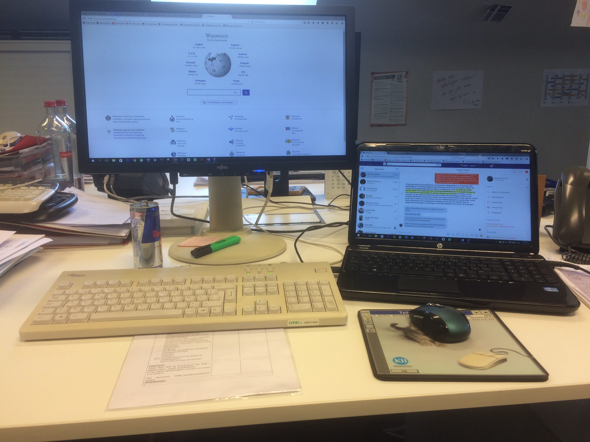
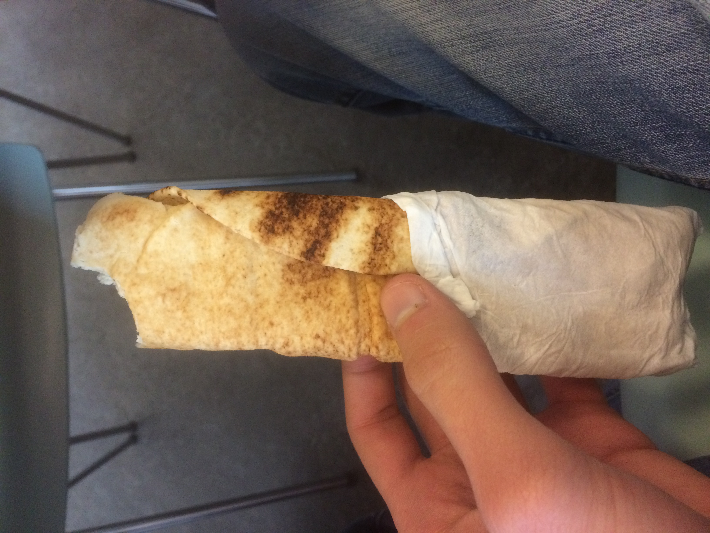
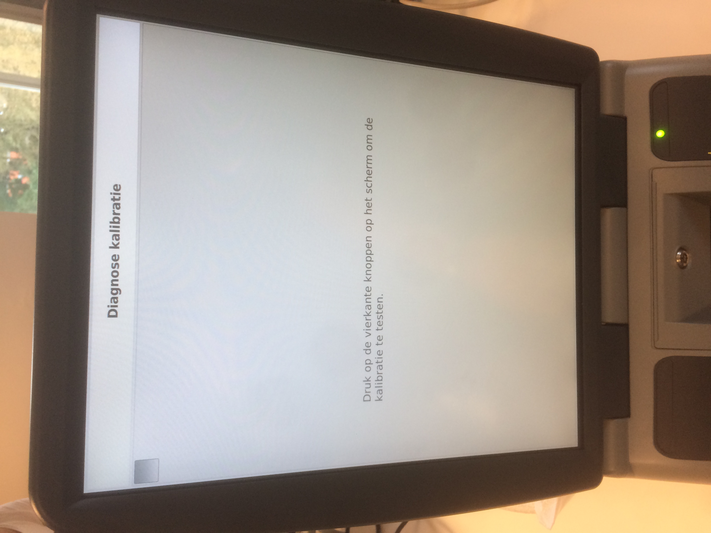
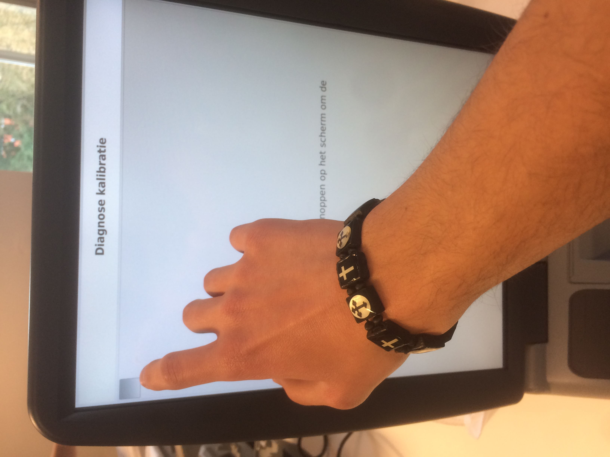
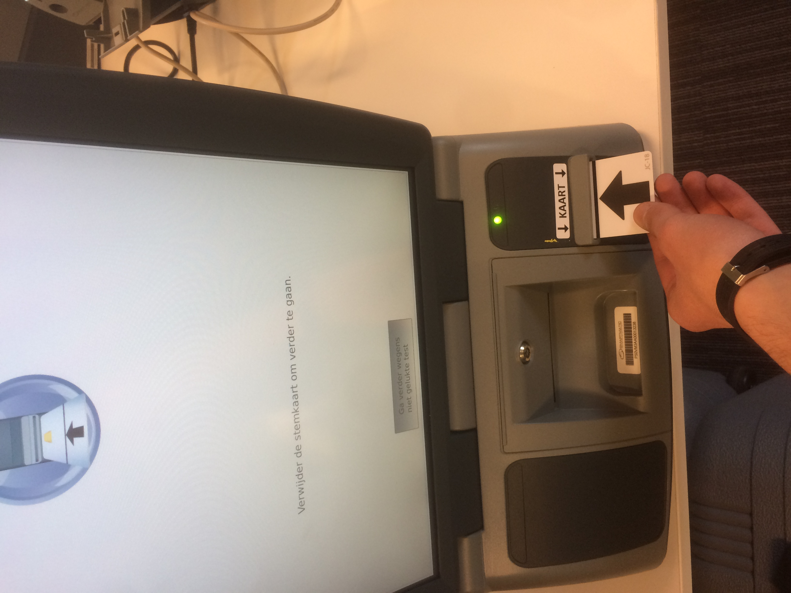
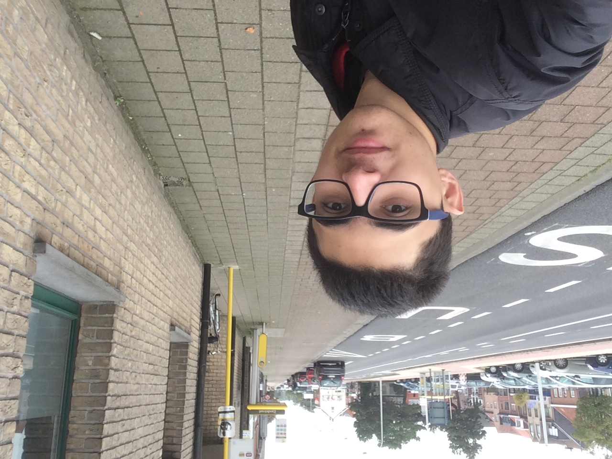

Eerste dag op stage: Het is een groot gebouw. Ik was er nog maar een keer geweest. Ik was nerveus.

Dat was mijn bureau. Ik heb mijn eigen laptop meegebracht. Mijn stagebegeleider zat altijd naast mij.

Middagpauze:
Ik was mijn boterham aan het eten. Het is Syrisch brood en er zit tijm en sesamzaadjes met olie tussen. De middagpauze duurt een uur, hij begint om 12:30 en eindigt om 13:30.

Ik heb hun geholpen om deze computers te testen. Het zijn stemcomputers.



Terug na een week op stage: dit is mijn bushalte. Ik was blij want het was een toffe week en ik voelde me als iemand die in de gemeente werkt en niet als iemand die iets nodig heeft.